In this article, I will show you how to install and use QEMU on Debian 9 Stretch. Let’s get started.
QEMU and KVM:
QEMU can be combined with KVM to use hardware virtualization features of your CPU. QEMU + KVM will get you almost near native hardware performance.
Hardware virtualization feature is disabled by default on AMD and Intel CPU’s. So you will have to enable them manually if you do wish to use it.
I recommend you enable hardware virtualization. If you don’t do so, QEMU will be very slow.
Enabling Hardware Virtualization:
If you have Intel CPU, then all you have to do is, enable VT-x or VT-d from the BIOS of your motherboard.
For AMD CPU, you have to enable AMD-v from the BIOS of your motherboard.
If your CPU supports hardware virtualization, and you enabled it from the BIOS of your computer, then you can check whether Virtualization is enabled from your Debian 9 Stretch machine with the following command:
As you can see, hardware virtualization is enabled.
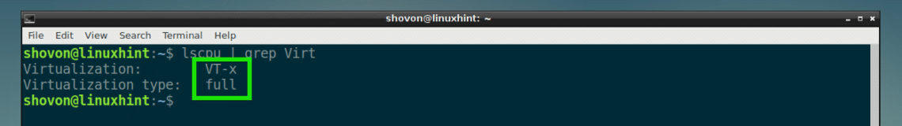
Installing QEMU and KVM:
QEMU is not installed by default on Debian 9 Stretch. But it is available in the official package repository of Debian 9 Stretch. So you can easily install it.
First, update the APT package repository cache with the following command:
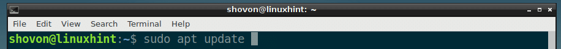
The APT package repository cache should be updated.
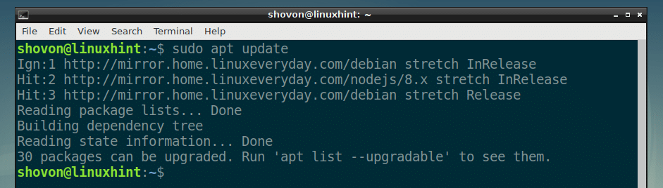
Now install QEMU with the following command:
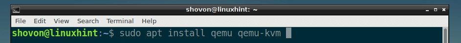
Now press y and then press <Enter> to continue.
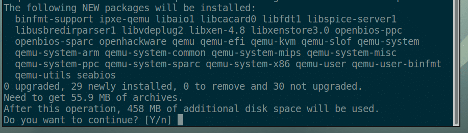
KVM and QEMU should be installed.
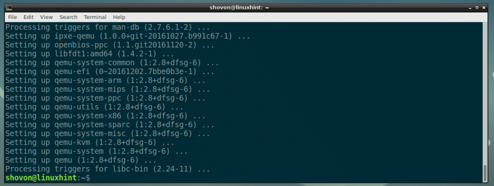
Using QEMU and KVM:
In this section, I will show you how to install Alpine Linux on a QEMU + KVM virtual machine.
Creating a VM Directory:
First, create a directory where all your VM data will be stored. I will call this VM directory from now on.
Create a VM directory with the following command:
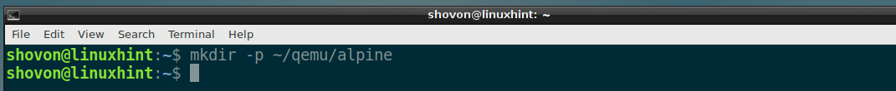
Now navigate to the VM directory with the following command:
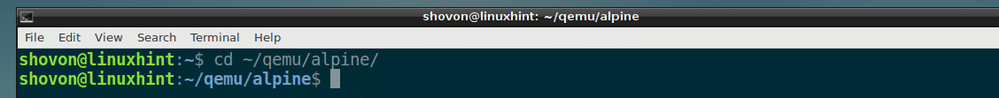
Downloading Alpine Linux ISO Image:
Now download the Alpine Linux Standard ISO image from https://alpinelinux.org/downloads/ into your VM directory.

At the time of this writing, the ISO image is alpine-standard-3.8.0-x86_64.iso
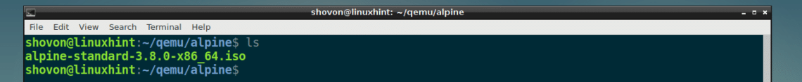
Creating QEMU Image:
Now you have to create a QEMU image. It is a virtual hard drive where you will install Alpine Linux. QEMU has its own command to create a QEMU image.
I am going to create a QEMU image alpine.img and allocate 8 GB of disk space to it with the following command:
NOTE: You can name the image something other than alpine.img and set the disk size to something other than 8G (8 Giga Byte).
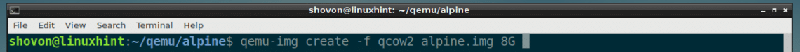
As you can see, alpine.img is created.
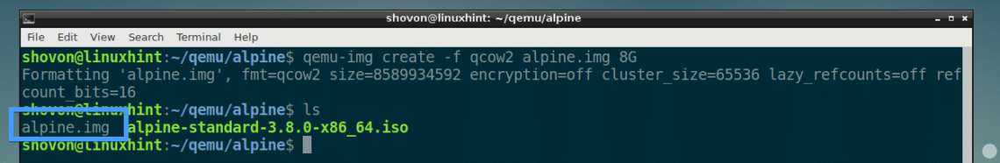
Starting the Alpine Installer:
Now you can start the QEMU emulation with KVM and install Alpine Linux on the image alpine.img.
I am going to use a shell script install.sh to start the installation as I believe it makes the command easier to understand and modify later.
Now run the following command to create install.sh:
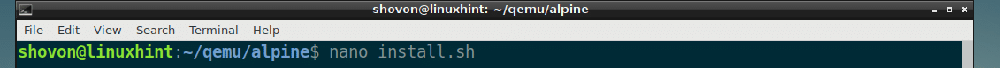
And type in the following lines to it:
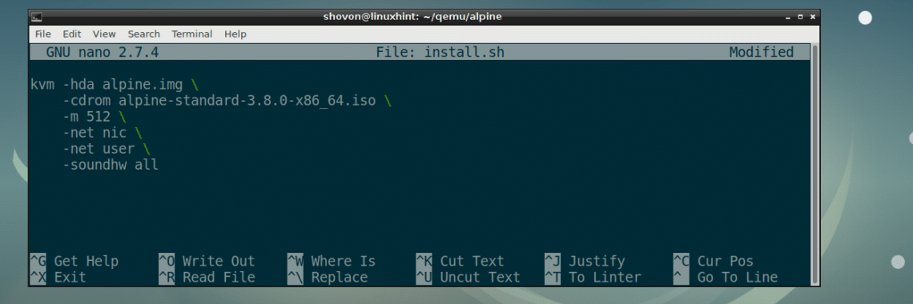
Now save the file with <Ctrl> + x and then press y and then press <Enter>.
NOTE: Here, -m 512 means 512 MB of memory (RAM) will be allocated to the virtual machine.
Now make the script install.sh executable with the following command:
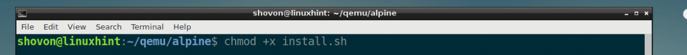
Now start the install script with:
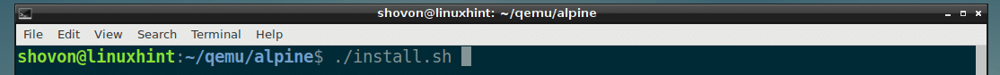
As you can see, the Alpine installer has booted.

Now type in root and press <Enter>. You should be logged in.
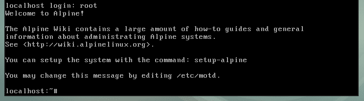
Now start the installer with the following command:
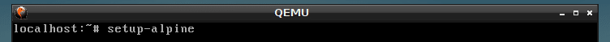
Now type in your keyboard layout (I picked us) and press <Enter>.
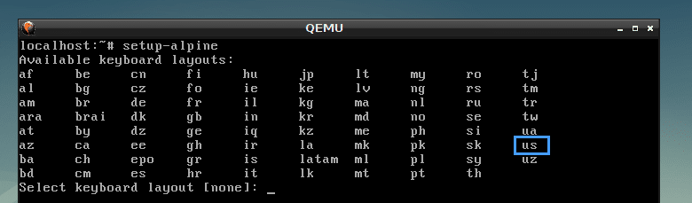
Select variant (I picked us) and press <Enter>.
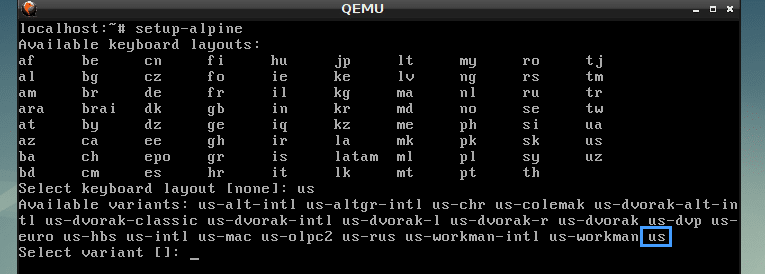
Now type in your hostname and press <Enter>.
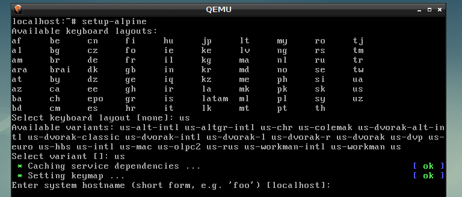
Now select your network interface. The default is eth0, which is correct. So I pressed <Enter> to select the default.
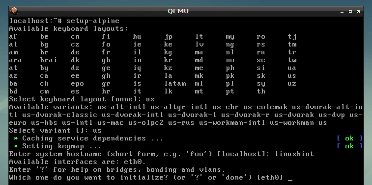
Now type in the IP address for your network interface. I will choose the default, which is dhcp assigned IP address. Once you’re done, press <Enter>.

I selected dhcp, so I pressed <Enter>.
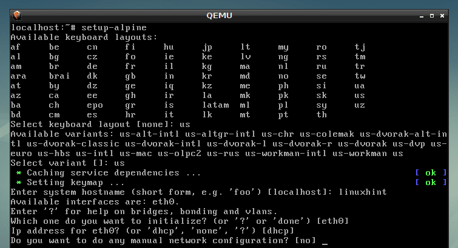
Now type in your new root password and press <Enter>.
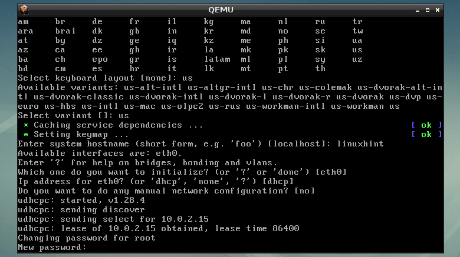
Now re-type the password and press <Enter>.
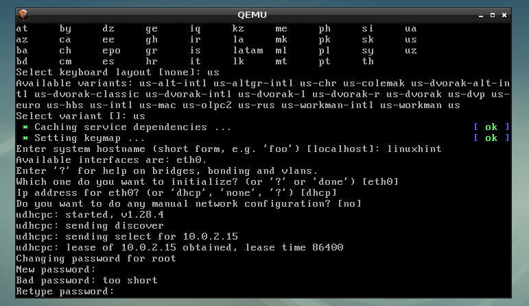
Now it’s time to select a timezone. The default is UTC, but you can list other supported timezones by pressing ? and <Enter>. I am selecting the default.
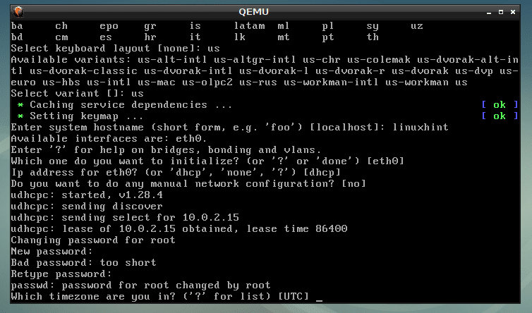
Press <Enter>.
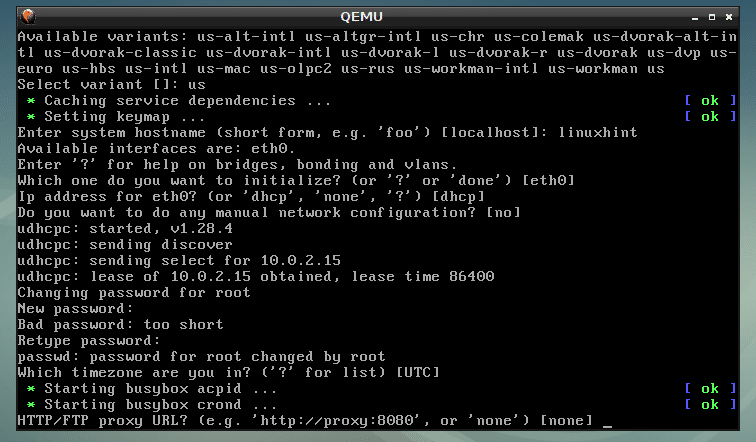
Press <Enter>.
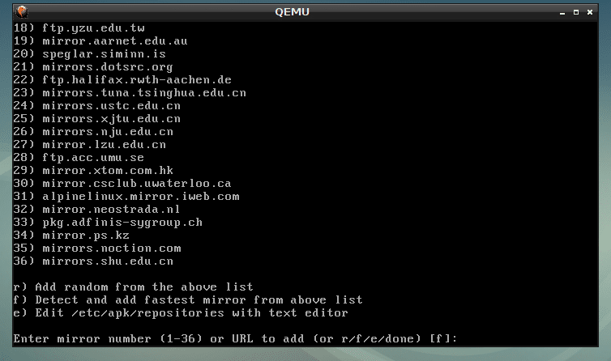
Press <Enter>.
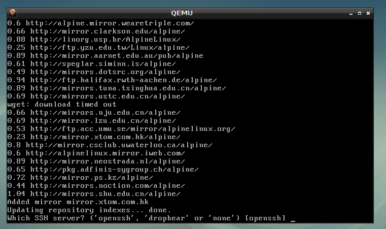
Type in sda and press <Enter>.
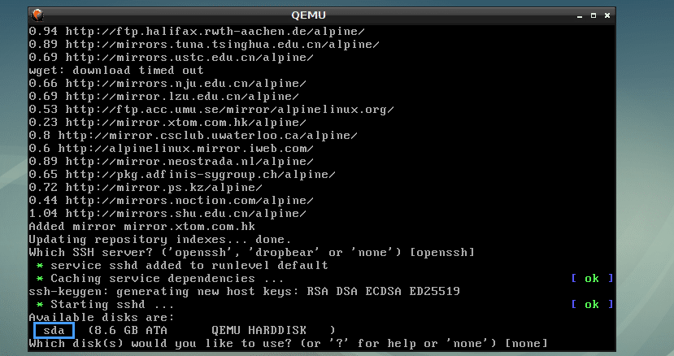
Type in sys and press <Enter>.
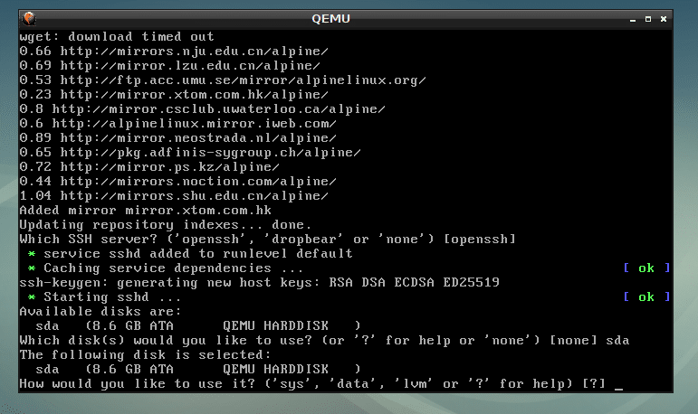
Now type in y and press <Enter>.
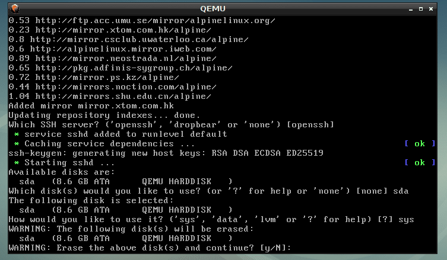
Alpine is being installed…
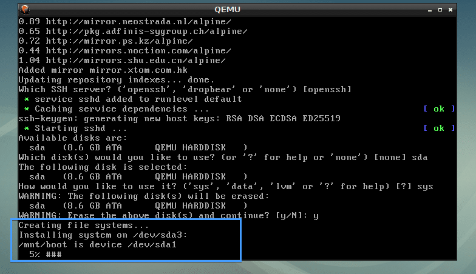
Alpine Linux is installed.
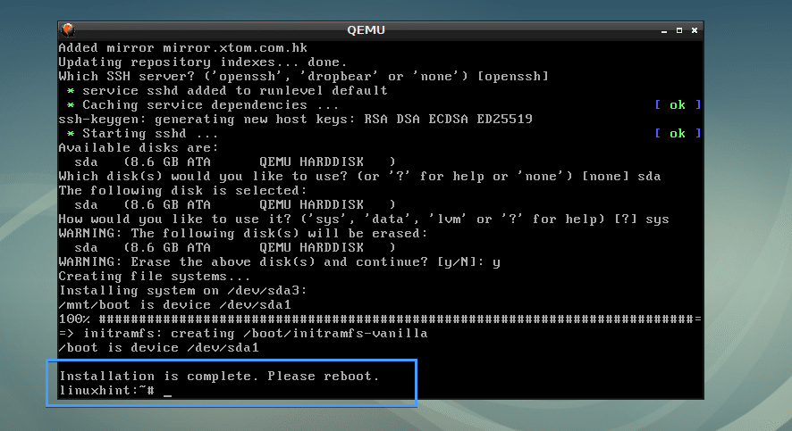
Booting Alpine from alpine.img QEMU Image:
Now create another shell script start.sh in the VM directory with the following command:
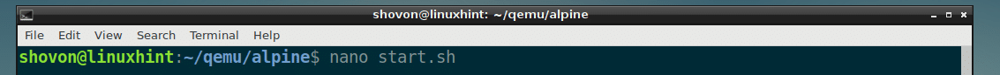
Now add the following lines to it and save it.
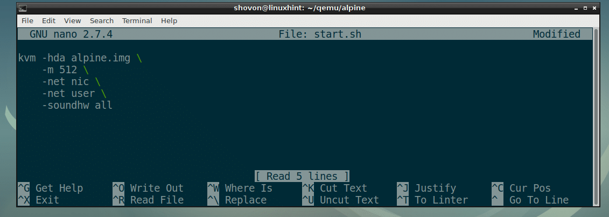
Make the script start.sh executable as follows:
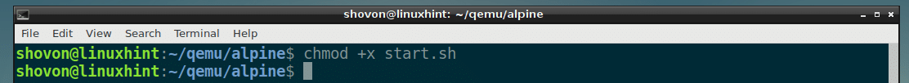
Finally, you can boot into your newly installed Alpine OS with QEMU KVM as follows:
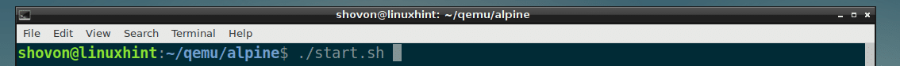
As you can see, Alpine Linux booted from the QEMU image.
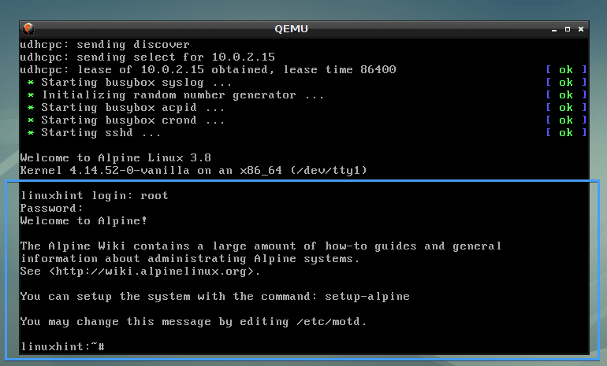
Emulating Other Architectures with QEMU:
QEMU supports a lot of CPU architectures as you can see from the screenshot below.
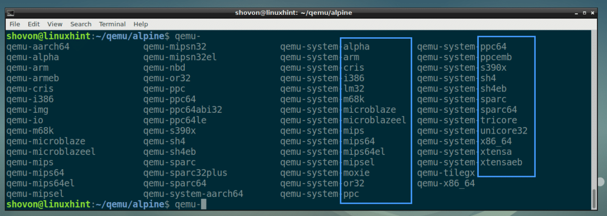
I used the kvm command in the earlier examples. It is actually a hardware virtualization enabled qemu-system-x86_64.
You can replace all the kvm commands with qemu-system-x86_64 command in the earlier examples and it would still work. But it will run slowly as it will not use hardware virtualization.
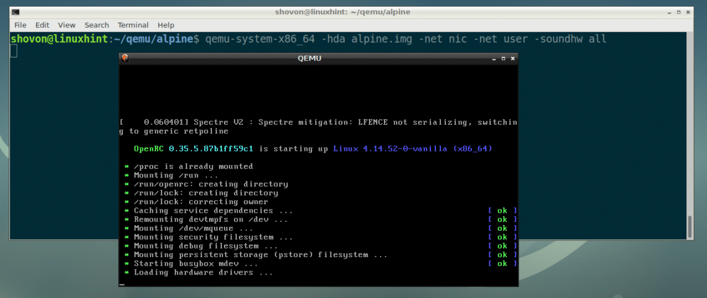
So that’s how you install and use QEMU on Debian 9 Stretch. Thanks for reading this article.